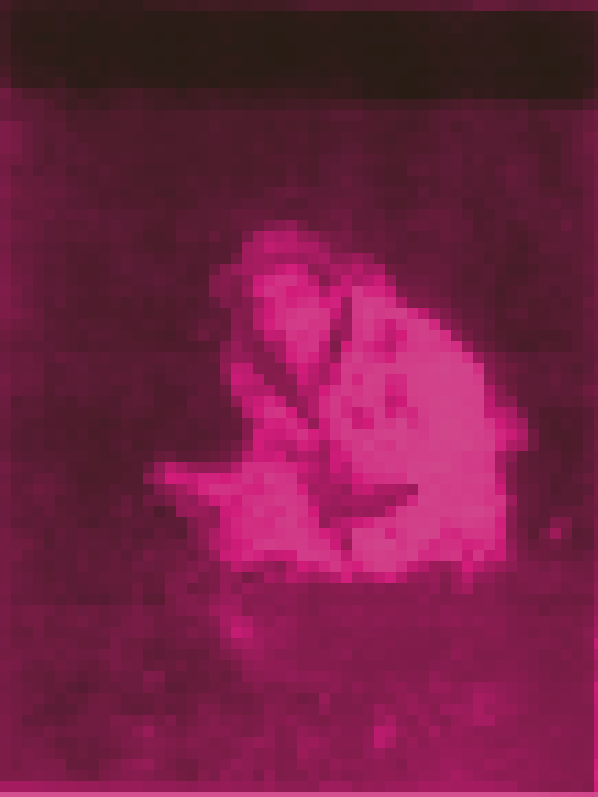

CLICK TO ENTER

CLICK TO ENTER


DJ Speedsick
a.k.a. "A*** E********"
LEGAL NOTICE
© DJ Speedsick. All content provided for informational and artistic purposes only. No material here constitutes legal or financial advice. External media remain property of their owners. No personal data collected. Use at your own risk.